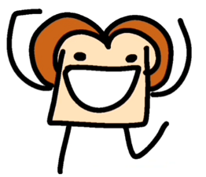
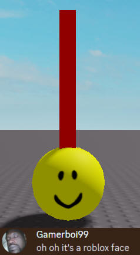
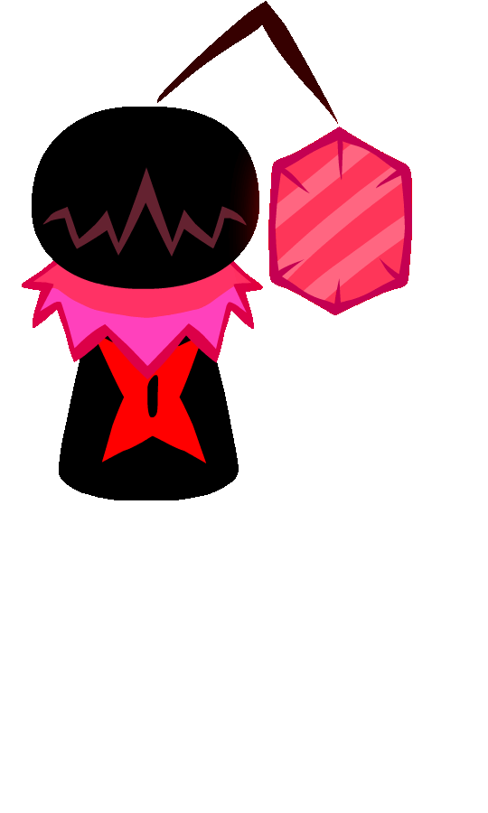
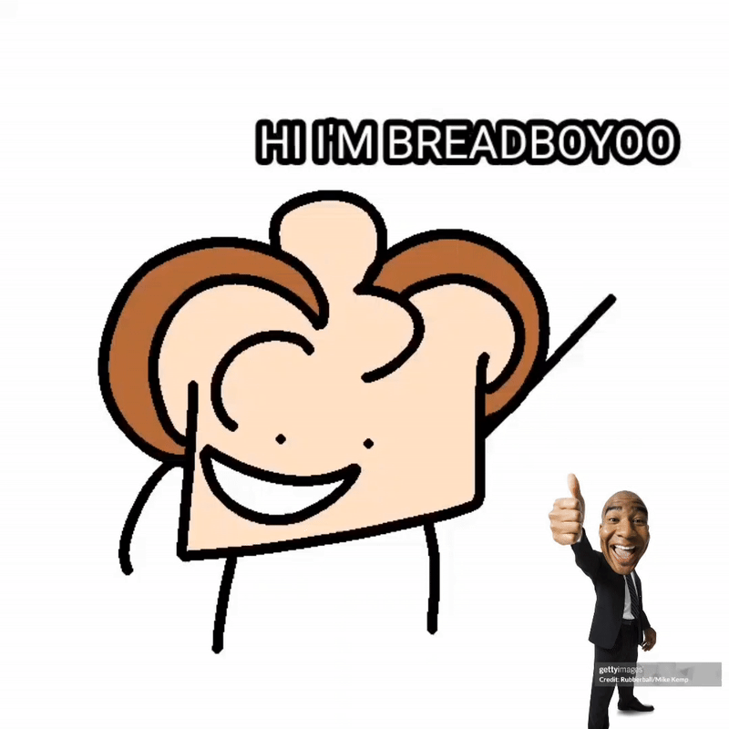
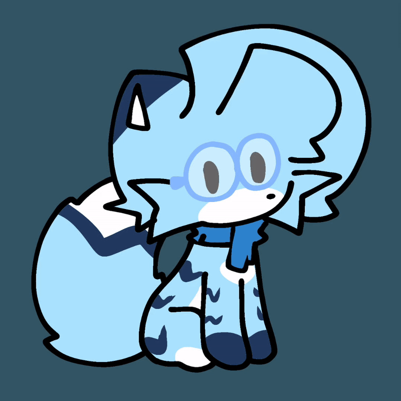
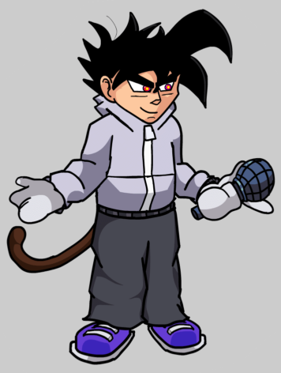
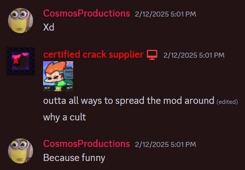

br. Bread without the "ead".

Also, check the Characters page for more infos...
Yes, the peeps dumb enough to make this mod so far, ofc. Right now, this isn't complete but no worries, we gettin' there!

Artist,
animator, musician, programmer, playtester, the WHOLE package of skills,
roughly. A little Twitter addict (recovering), and overall a pretty
HOT MESS. He's the one who started getting work on this and
assembled the team that first did stuff for the mod, and wrote the code that
gives it life and breath.
Also, he sucked at FNF songs back in 2022 (hence the shittyness n'
spammyness in the mod's old songs), he later and luckily improved over
the years himself. Uses Ibis Paint X (and Adobe Flash) for art, VS Code for
code, and FL Studio (and FL mobile) for music, and his goofy ideas for the
ideas.

The bread himself, and the one who started it all. He leads the story, makes the characters, and draws them into the game all for his peak arch-rival Charles to implement into it. Like Charles, he uses Ibis Paint X for art, and CapCut for video/cutscene production.
Basically the "Saster" of the mod (ik its an old phrase but come on). The first introverted furry to join the mod team.
He joined the devs back after he got out of jail, btw.

Also whenever Charles tries to assign a song to be worked on, he just gets first to show up, apparently.
Another of the animators in the team, he also works for FNF: Mario's Madness HD if you're wondering.

By the way, he tried to start a cult, out of all ways to spread the mod around the block... for some reason...

Don't worry, we have other ways to spread the mod out of the area for some hypin'! Hopefully...